Un calendario sin ruido,
con carácter.
Tu año, de un vistazo. Tu día, con historia.
Ya en el App Store Descárgala gratisiPhone · iOS 18 o posterior · nueve idiomas
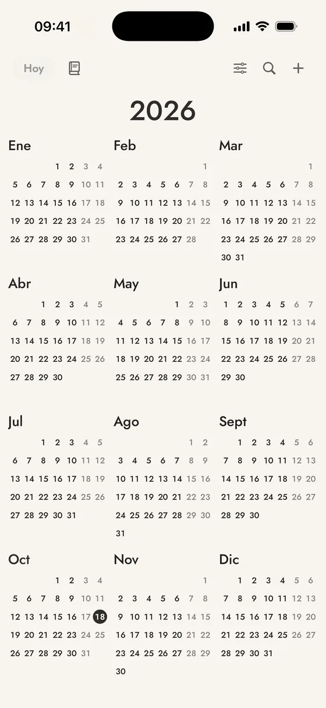
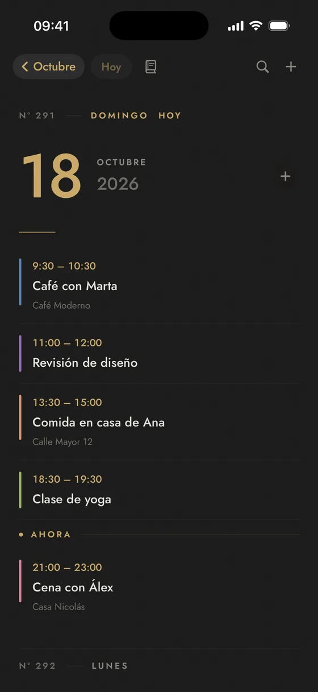
Del año al día, sin perder el hilo.
Año, mes y día se abren uno dentro de otro, sin pestañas ni menús: tocas un mes y entras; tocas un día y ves su agenda; deslizas desde el borde para volver, y todo queda donde lo dejaste. Cada vista es un scroll continuo, y «Hoy» te devuelve al presente.
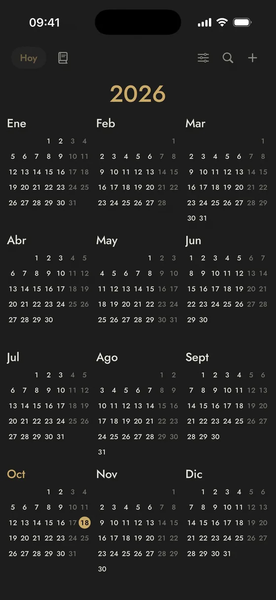
Año
Los doce meses de un vistazo; toca uno para abrirlo. Cada año lleva su propio título y sube con el calendario, como en una página.
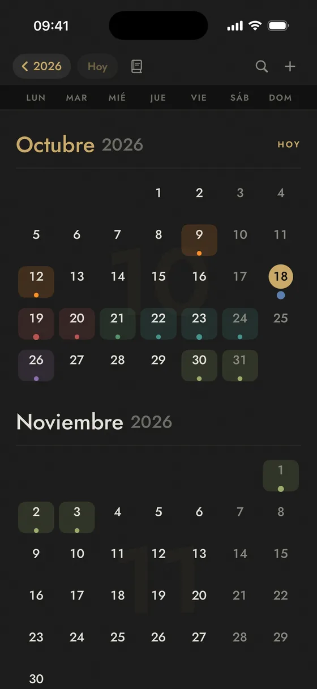
Mes
Scroll continuo, mes tras mes; toca un día para ver su agenda. Los días con algo apuntado se tiñen del color de su evento.
Día
Tu agenda en scroll continuo, hacia delante y hacia atrás, sin flechas. Con la hora, el lugar y la raya de color de cada evento.
El dato del día
18
Octubre
Luis XIV revoca el Edicto de Nantes
En 1685, Francia ilegalizó el protestantismo y provocó el exilio de cientos de miles de personas.
Cada día, un hecho para la fecha.
Escrito con calma, con su año y su categoría, y un enlace a Wikipedia para seguir leyendo.
- Uno para cada día del año, también el 29 de febrero.
- En tu idioma: los nueve de la app.
- Un aviso discreto cada día, a la hora que elijas, si lo activas. Y la primera vez que abres la app cada día, te recibe el dato.
Once apariencias. Dos gratis, nueve con Plus.
Cada una con su base y su tinta, pensada para leerse bien de día y de noche. Cambias con un toque y se ve igual en los widgets.
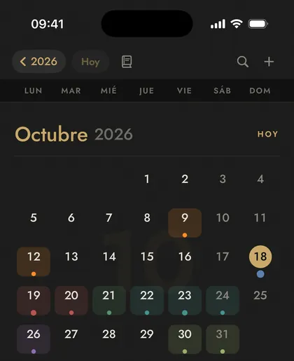
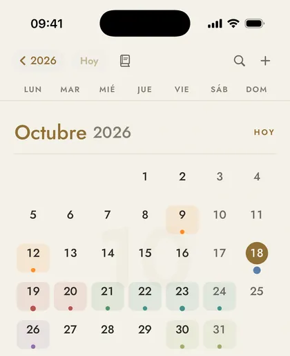
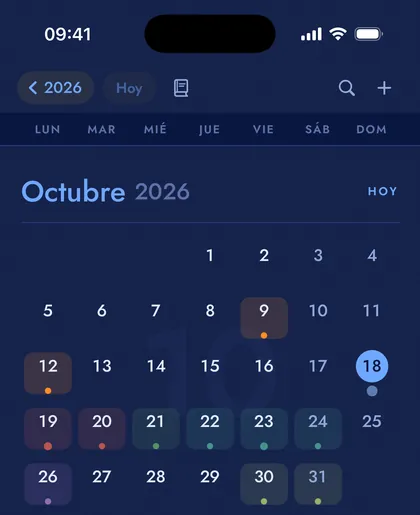
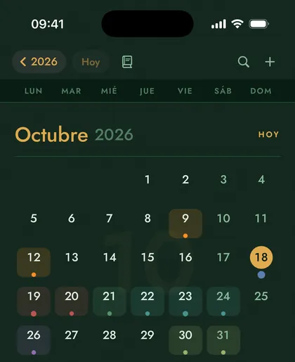
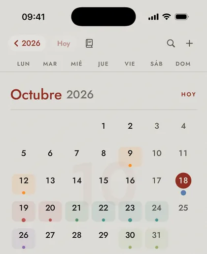
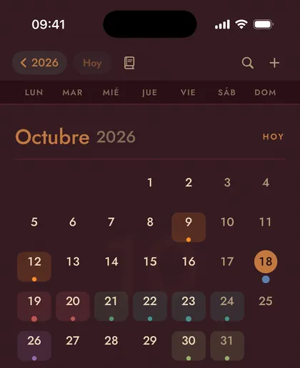
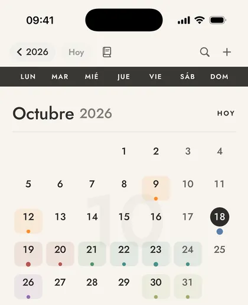
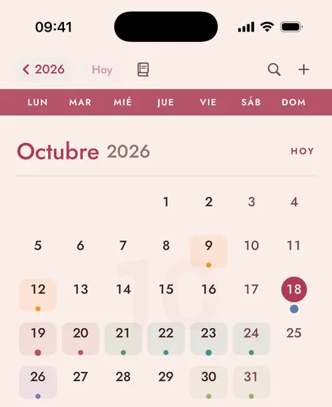
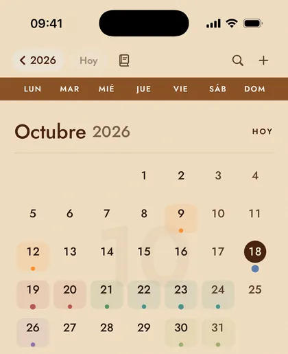
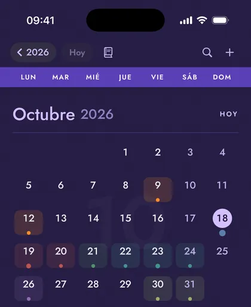
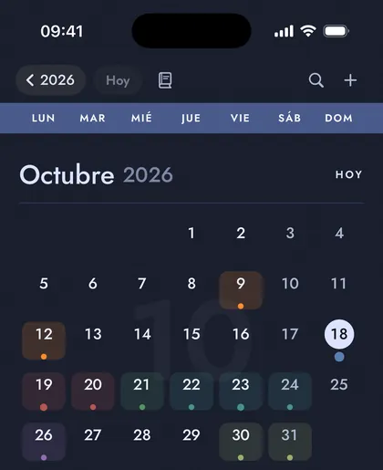
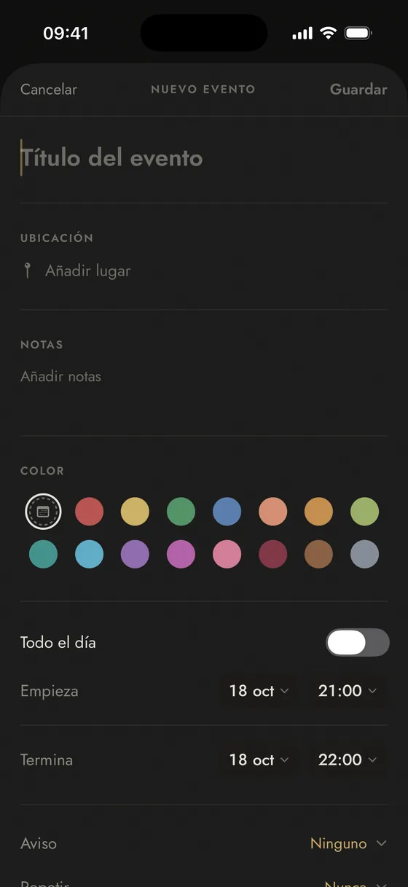
Sobre el calendario de siempre, con tu color.
Marrow usa el calendario de tu iPhone: lo que apuntas aparece en tus otras apps y viaja por tu iCloud.
- Crea y edita con repetición (cada día, semana, dos semanas, mes o año), aviso, ubicación con búsqueda de Apple Maps, notas y enlace.
- Avisos que llegan: Marrow programa los suyos (con tu permiso de notificaciones), también si las del Calendario están apagadas.
- Cuenta atrás en vivo en la ficha de cada evento que aún no ha pasado.
- Un color por evento para distinguir de un vistazo el trabajo del fin de semana.
- Búsqueda por título, lugar o notas, sin acentos ni mayúsculas.
Cuatro colores gratis y once más con Plus.
Nueve idiomas, el tuyo entre ellos.
La app, los widgets, los avisos y los hechos de cada día, en el idioma que elijas. Por defecto sigue el de tu iPhone.
La app es completa. Plus la hace tuya.
Un único pago, para siempre, sin suscripción. Se restaura en todos tus dispositivos con tu Apple ID.
Gratis
Marrow
Todo lo necesario, sin trampa.
- Año, mes y día, cada uno en scroll continuo
- El dato del día y su aviso diario opcional
- Eventos con repetición, avisos, ubicación y búsqueda
- Dos apariencias (Negro y Blanco) y cuatro colores de evento
- Widgets del dato del día y de la agenda de hoy
- Nueve idiomas
Un solo pago
Marrow Plus
Para siempre. Sin suscripciones.
- Nueve apariencias más: Cobalto, Enebro, Linotipia, Merlot, Marfil, Cacao y rosa, Tostado, Nebulosa y Eclipse
- Once colores más para tus eventos
- Cuenta atrás en la pantalla de inicio y en la de bloqueo
- Widget de agenda ampliado: mira más allá de hoy
- Adjuntos en cada evento (la entrada, el justificante, el PDF de la reserva), guardados en tu iPhone
- Widgets sin firma
Lo tuyo se queda contigo.
Sin cuentas
No hay registro ni inicio de sesión. Abres la app y ya está.
Sin anuncios ni analítica
Ni rastreadores ni SDK de terceros. No sabemos qué haces con tu calendario.
Sin servidor
Tus eventos viven en el calendario del iPhone y en tu iCloud. Marrow no guarda copia, y los adjuntos se quedan en tu dispositivo.
Un calendario con 365 motivos para abrirlo.
No es un calendario nuevo. Es el de siempre, sin lo que le sobraba.
Ya en el App Store Descárgala gratis